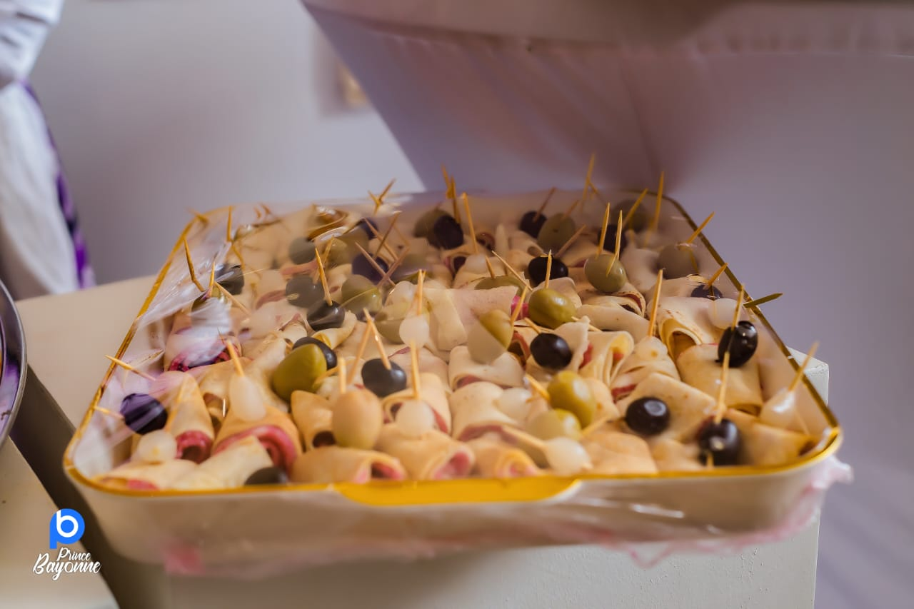
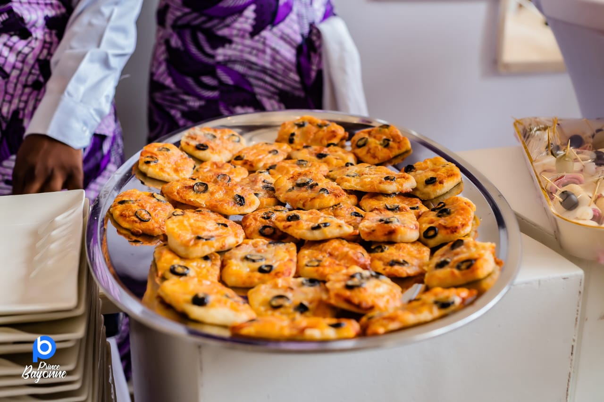
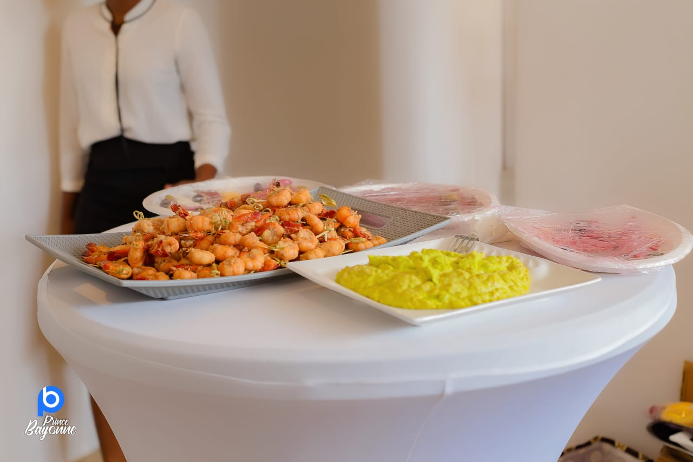

Découvrez le déroulement de nos célébrations
Cérémonie traditionnelle de la dot en famille et avec nos proches. Un moment privilégié où nos familles se rencontrent officiellement et célèbrent notre union selon nos traditions.
Voir sur la carteUnion officielle devant la loi. Nous échangerons nos vœux civils en présence de nos témoins et de nos proches pour officialiser légalement notre mariage.
Bénédiction de notre union devant Dieu. Une cérémonie empreinte de spiritualité où nous recevrons la bénédiction divine pour notre vie commune.
Suite à la bénédiction, nous vous invitons à nous rejoindre pour un cocktail rafraîchissant où nous pourrons trinquer à notre union et partager un moment de convivialité.



N'hésitez pas à immortaliser ces moments précieux ! Partagez vos photos avec le hashtag #SandrineTheodore2025
Un délicieux menu vous attend pour la soirée. Merci de nous faire part de vos allergies alimentaires lors de votre RSVP.
La célébration du mariage civil et religieux se déroulera au même endroit : La Royale.
Vous n’aurez pas besoin de vous déplacer entre les cérémonies.
La soirée se déroulera au lieu indiqué sur la Carte.